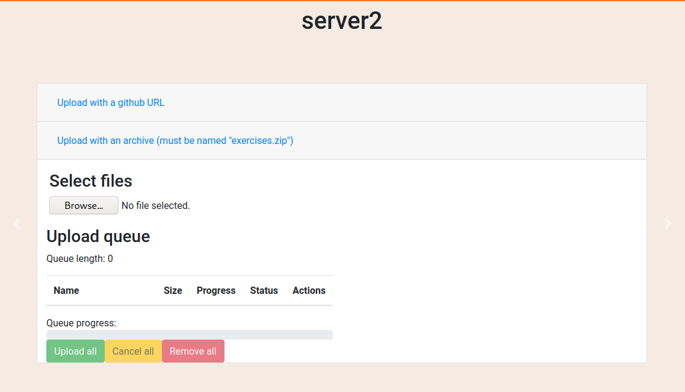

<div class="help-page">
  <div class="container page">
    <div class="row">
      <div class="col-md-10 offset-md-1 col-xs-12">
        <h1 class="text-xs-center">{{ title }}</h1>
        <hr />
        <h2>Table of contents</h2>
        <h4>
          <a href="help#create_server">How to create a server</a><br />
          <a href="help#manage_server">How to manage your server</a><br />
          <a href="help#upload_files">How to upload files to your server</a><br />
          <a href="help#manage_files">How to manage files in your server</a><br />
          <a href="help#exercises_list">-> Exercises List Part</a><br />
          <a href="help#trash">-> Trash Part</a><br />
          <a href="help#groups_list">-> Groups List Part</a><br />
          <a href="help#teacher_token">How to retrieve your teacher token</a><br />
          <a href="help#access_server">How to access to the server</a><br />
          <a href="help#shutoff">How to shut off/on a server</a><br />
          <a href="help#dangerous">Dangerous Actions</a><br />
          <a href="help#password">-> How to change my password</a><br />
          <a href="help#delete_server">-> How to delete a server</a><br />
          <a href="help#disable_account">-> How to disable my account</a><br />
          <a href="help#delete_account">-> How to delete my account</a><br />
        </h4>
        <hr />
        <div id="create_server">
          <h4>How to create a server</h4>
          <p id="body">To create your server you simply have to go : <a href="editor" target="_blank">there</a> (click
            to open in a new page) then enter a name for your server and if you want a reminder of what is your server
            about. Click on Publish server when you are done. </p>
          <p id="tips">TIPS : <br />If the server name if already taken don't worry just adapt the name. <br />Special
            caracters and space (blanks) are not allowed [/*-+%...]</p>
        </div>
        
        
        <p>Blanks are not allowed in the server name</p>
        
        <hr />
        <div id="manage_server"></div>
        <h4>How to manage your server</h4>
        <p>Click <a href="" target="_blank">here</a> (click to open in a new page) then search for your server, click on
          it.
          
          Then click on manage server.
          
        </p>
        <a href="help#">go top</a>
        <hr />
        <div id="upload_files"></div>
        <h4>How to upload files to your server</h4>
        <p> When you click on manage server you should jump on a page with this.
          
          You can use two ways to upload your files : Github way or local way.<br />
          In github way you just have to enter a correct Github URL of the repository you want to add to your server
          then click on the button.
          
          In the local way, browse the files you want to add then select it.
          
          The file must be an .zip archive and the exercises must be at the archive root.
          <br />
          Not in a subdirectory of the root.<br />
          <br />
          Then you should have this screen.
          <br />
          Click on upload then wait for the status response.
          <br />
          If the status is Success, you can continue. Otherwise may be you have a problem with your .zip
          archive. Sometimes archives from some softwares on certain distributions are not accepted, just try another
          archive software and submit again. If the problem persists, please <a href="contact">contact us</a>.
        </p>
        <a href="help#">go top</a>
        <hr />
        <div id="manage_files"></div>
        <h4>How to manage files in your server</h4>
        <p>
          When you have no file in your server, it shoul look like this.
          <br />
          If you have uploaded some file in your server you should have them like in this example.
          <br />
          You have three sections: Trash, Exercises List and Groups List.<br />
        </p>
        <h6 id="exercises_list">Exercises List</h6>
        <p>Exercises List is a section where you can found the exercises you have uploaded to your server but
          they are not initialized inside the server. Do do it, you must place them inside the Groups List field.<br />
          Drag your file.
          <br />
          Go on the wanted group.
          <br />
          Drop your file.
          <br />
        </p>
        <h6 id="trash">Trash</h6>
        <p>Trash is a section where you can put files to delete them, for example useless files or corrupted
          files.<br />
          To do it juste drag and drop your files inside the Trash field and when YOU ARE SURE ABOUT IT delete them by
          clicking on the clean button. Files deleted cannot be retrieved.<br />
          Drag your useless file inside the field.
          <br />
          Drop it.
          <br />
          Click here when you are sure you want to delete it.<br />
          <br />
        </p>
        <h6 id="groups_list">Groups List</h6>
        <p>Groups List a section where you have the files which are currently used inside your server. To
          place
          new files inside just drag and drop them from the Exercises field, give a name to your group then when you are
          sure about it, click on the send button to initialize them to the server.<br />
          Drag your file.
          <br />
          Here we create a new group.
          <br />
          To name it click on this field.
          <br />
          Then replace the default name by something more accurate.
          <br />
          Then click outside the field to save the new name.

          If you have made one or more mistakes and you don't know how to revert it, click on the reset button.
          This button will load the configuration from your last upload/send and revert all the changes you have done
          (drag & drop and rename changes).<br />
          <br />

          When you are done click on the send button.<br />
          <br />
          Your screen would look like this.<br />
          <br />
          Click on the button, then wait the time the configuration is sended to the server.<br />
          <br />
          When the configuration is sended. You should have this window which appears.<br />
          <br />
          If you are done and you want to launch your LearnOCaml server click on YES.<br />
          <br />
          Then wait the time your server is beeing launched.<br />
          <br />
          Congratulations ! Your server is now online and ready to be used.
        </p>

        <a href="help#">go top</a>
        <hr />
        <div id="teacher_token"></div>
        <h4>How to retrieve your teacher token</h4>
        <p>
          Retrieving your teacher token is an unique action executed the first time you launch a server.
          To retrieve it, go at <a href="home" target="_blank">home page</a>. You might have this screen.<br />
          <br />
          Then click on the yellow button.<br />
          <br />
          Then wait, this should not be too long and it's not necessary to click again on the button or to spam
          it.<br />
          <br />
          Finally your token should appear.<br />
          <br />
        </p>
        <a href="help#">go top</a>
        <hr />
        <div id="access_server"></div>
        <h4>How to access to the server</h4>
        <p>
          Before accessing your server, copy your teacher token.<br />
          <br />
          Then click on the link generated for your server.<br />
          <br />
          This screen should appear.<br />
          <br />
          Paste your teacher token in this field.<br />
          <br />
          Now you should be connected to your LearnOCaml server.<br />
          <br />
        </p>
        <a href="help#">go top</a>
        <hr />
        <div id="shutoff"></div>
        <h4>How to shut off/on a server</h4>
        To shut off a server, just go at <a href="home" target="_blank">home page</a> click on your server then click on
        this button then wait.
        <br />
        To shut a server on do the same but click here.
        <br />
        <a href="help#">go top</a>
        <hr />
        <div id="dangerous"></div>
        <h4>Dangerous Actions</h4>
        <p>
          They are some dangerous actions which can performed.
          You can find it at the bottom of your profile settings page.<br />
          <br />
        </p>
        <a href="help#">go top</a>
        <hr />
        <div id="password"></div>
        <h4>How to change my password</h4>
        <p>
          To change your password click <a href="reset-password" target="_blank"> here</a> and fill the blank.<br />
          You should have this screen.<br />
          <br />
          In the email verification field, put your current email.<br />
          In the old password field, put your old password.<br />
          In the new password field, put the password you want, it must respect the password restrictions above and no
          special caracters are allowed.<br />
          In the new password verification field, put a second time your new password.<br />
          Then click on update password button when you are sure about your modifications.<br />
        </p>
        <a href="help#">go top</a>
        <hr />
        <div id="delete_server"></div>
        <h4>How to delete a server</h4>
        <p>
          Deleting a server is an action THAT CAN NOT BE UNDONE. All the data about your server will be erased in
          accordance with the GDPR.<br />
          Do not hesitate to ask yourself if this is a good idea or not before doing this. Disable your server to use it
          later is also a good idea.<br />
          To delete a server go on the management page of itself, scroll down and you should see this.<br />
          <br />
          Check each box if you agree with it then click on the red button, it's done.
        </p>
        <a href="help#">go top</a>
        <hr />
        <div id="disable_account"></div>
        <h4>How to disable my account</h4>
        <p>
          If you want to take a break, you can disable your account.
          Disabling your account will automatically disable all your active server.
          Click <a href="disable-account" target="_blank"> here</a> to have this screen.
          <br />
          In the email verification field, put your current email.<br />
          In the password field, put your current password.<br />
          In the password verification field, put a second time your password.<br />
          In the username verification field, put your username.<br />
          Then check each box if you agree with it.<br />
          Then click on disable account button when you are sure about it.<br />
        </p>
        <a href="help#">go top</a>
        <hr />
        <div id="delete_account"></div>
        <h4>How to delete my account</h4>
        <p>
          Deleting your account will automatically delete all your servers with no possibilities to retrieve your
          data.<br />
          THIS ACTION CAN NOT BE UNDONE.<br />
          If you want to delete your account for whatever reason, go <a href="delete-account" target="_blank">here</a>
          you should have this screen.<br />
          <br />
          In the email verification field, put your current email.<br />
          In the password field, put your current password.<br />
          In the password verification field, put a second time your password.<br />
          In the username verification field, put your username.<br />
          Then check each box if you agree with it.<br />
          Then click on delete account button when you are sure about it.<br />
        </p>
        <a href="help#">go top</a>
      </div>
    </div>
  </div>
</div>